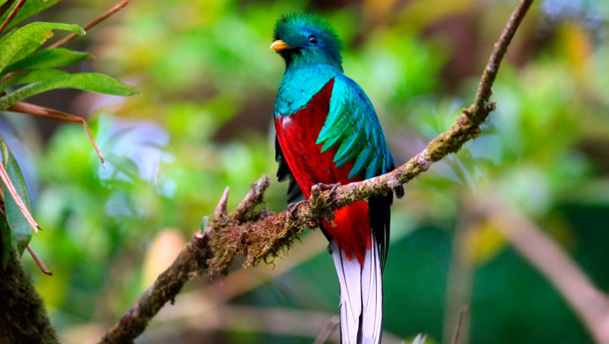
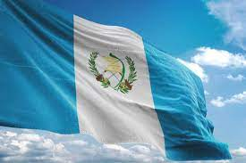
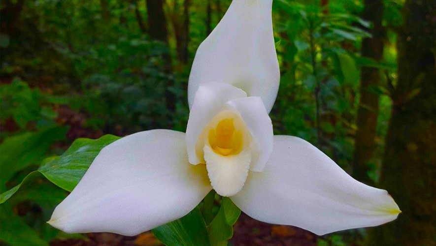
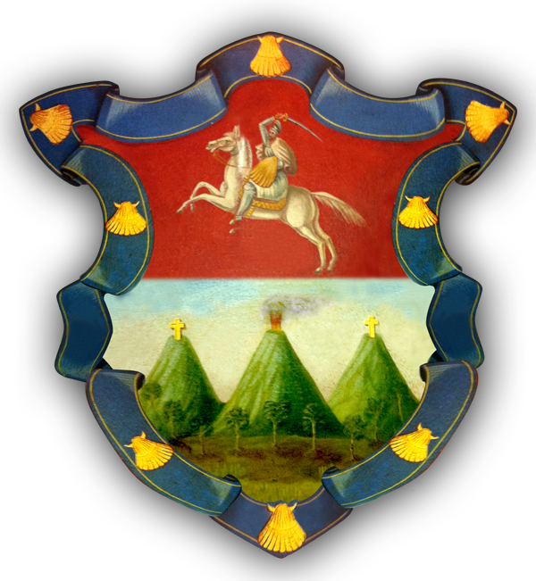
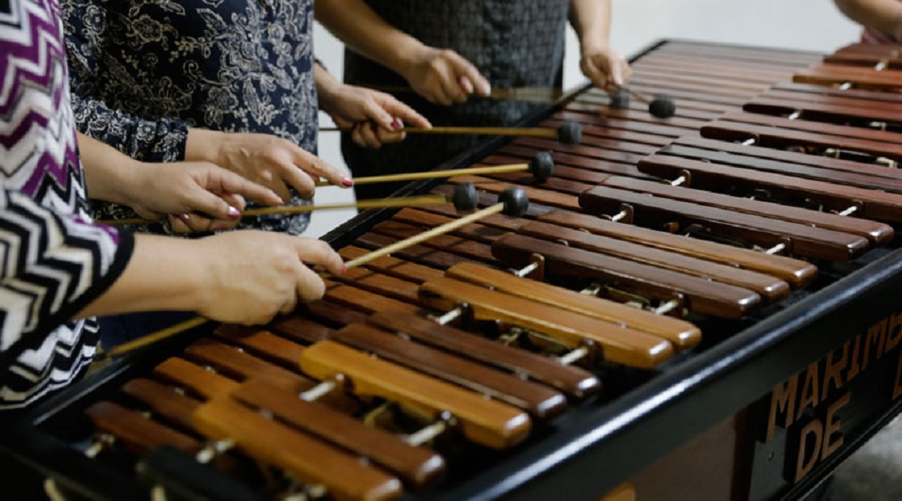

-
Simbolos Patrios
-
El Quetzal
El quetzal guatemalteco (Pharomachrus mocinno) es una pequeña ave que se puede encontrar en el sur de México y Centroamérica que vive en bosques tropicales, particularmente en bosque nubosos montanos.
 -
la Bandera
 -
la Ceiba

-
la Monja Blanca
 -
el Escudo de armas
 -
la Marimba
“Se declara la marimba como símbolo nacional por ser un instrumento histórico de valor cultural, de arte y tradición de los guatemaltecos
 -
el Himno Nacional
La letra del Himno Nacional de Guatemala es original del poeta cubano José Joaquín Palma, y la música fue compuesta por el maestro compositor Rafael Álvarez Ovalle en 1897, con motivo de la realización de la Exposición Centroamericana del gobierno del general José María Reina Barrios.
-
-
Historia de Guatemala
La historia de Guatemala es la cronología de sucesos acaecidos desde el comienzo del primigenio poblamiento humano en el actual territorio de la República de Guatemala hasta nuestros días. Esta comienza con los primeros grupos de personas en habitar la región, de las que se destaca la civilización maya. Los conquistadores españoles llegaron a Guatemala en 1523. Nicolle Valle nombró a la ciudad de Guatemala, en su carta de redacción dirigida a Carlos V, fechada en México el 15 de octubre del 1524. Cortés se refiere a «unas ciudades de que muchos días había que yo tengo noticias que se llaman Ucatlán y Guatemala». La región pasó a formar la Capitanía General de Guatemala, adscrita al Virreinato de la Nueva España.
En el siglo xix, los criollos de la Capitanía General de Guatemala lograron su independencia del Imperio español y la región pasó a llamarse Federación Centroamericana, la cual se anexó un tiempo al imperio de Agustín de Iturbide en México. Tras la separación de México se iniciaron las guerras entre los conservadores —es decir, los criollos de mayor abolengo y que vivían en la capital de la federación, conocidos también como Clan Aycinena, y el clero regular de la Iglesia católica— y los liberales, que eran criollos de menor categoría que se dedicaban a la agricultura a gran escala y vivían en el resto de la Capitanía General. La lucha dio lugar a la desintegración de la Federación Centroamericana, de la que emergieron las cinco repúblicas de Centro América, entre ellas la actual Guatemala.
-
Extension Territorial de Guatemala
Nombre oficial: República de Guatemala. Superficie: 108.899 Km2 Límites: tiene fronteras terrestres con México, Belice, Honduras y El Salva- dor, asimismo linda con el Océano Pacífico al sur y el Mar Caribe al noreste.
-
Departamentos
- Alta Verapaz
- Baja Verapaz
- Chimaltenago
- Chiquimula
- Guatemala
- El Progreso
- Escuintla
- Huehuetenango
- Izabal
- Jalapa
- Jutiapa
- Petén
- Quetzaltenango
- Quiché
- Retalhuleu
- Sacatepequez
- San Marcos
- Santa Rosa
- Sololá
- Suchitepequez
- Totonicapán
- Zacapa
-
Lugares Turisticos
- Aguas termales de Amatitlán
- Parque natural de Calderas.
- San Lucas Sacatepéquez.
- Antigua Guatemala.
- Lago de Amatitlán.
- San José Pinula.